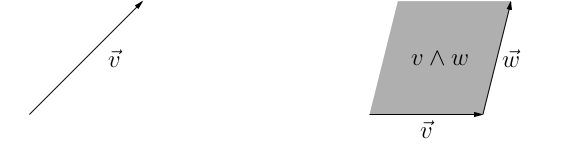
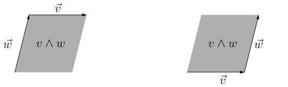

Lezione 7
Calcolo numerico per la generazione di immagini fotorealistiche
Maurizio Tomasi maurizio.tomasi@unimi.it
Quaternioni (argomento opzionale)
Numeri complessi e quaternioni
Nella lezione della settimana scorsa abbiamo studiato le trasformazioni di rotazione, che abbiamo scritto come matrici.
È possibile usare un formalismo alternativo, che usa i numeri complessi per le rotazioni 2D e i quaternioni per le rotazioni 3D.
I quaternioni hanno dei vantaggi significativi rispetto alle matrici di rotazione 3D, e sono usati in robotica, nel controllo dell’assetto delle missioni spaziali e nei videogiochi.
Noi non useremo quaternioni nel corso, quindi questo argomento non sarà richiesto all’esame. Se volete approfondire l’argomento, due ottimi testi sono Visualizing quaternions (Hanson) e Quaternions for computer graphics (Vince).
Numeri complessi
Facciamo un breve ripasso dei numeri complessi.
L’algebra ℂ dei numeri complessi contiene elementi z = (\Re z, \Im z) = (x, y).
Il prodotto si definisce come
z_1 \times z_2 = (\Re z_1\,\Re z_2 - \Im z_1\,\Im z_2, \Re z_1\,\Im z_2 + \Im z_1\,\Re z_2).
Introducendo i tale che i^2 = -1 e scrivendo i numeri complessi nella forma z = x + i y, la formula del prodotto è più semplice da ricordare:
(x_1 + i y_1) \times (x_2 + i y_2) = x_1 x_2 - y_1 y_2 + i \bigl(x_1 y_2 + x_2 y_1\bigr).
Rotazioni e numeri complessi
È possibile codificare una rotazione R(\theta) attorno all’origine sul piano tramite il numero complesso
r(\theta) = e^{i \theta} = \cos\theta + i\sin\theta
se si associa al vettore da ruotare \vec{v} = x \hat e_x + y \hat e_z il numero complesso
z = x + iy.
Sotto queste ipotesi, l’espressione r(\theta) \cdot z è equivalente a R(\theta)\vec{v}.
Anziché i 4 coefficienti della matrice R(\theta), servono solo \Re z e \Im z.
Da 2D a 3D
I quaternioni generalizzano al caso tridimensionale la capacità dei numeri complessi di codificare rotazioni bidimensionali. Sono stati inventati (o «scoperti»?) da W. R. Hamilton nel 1843, e la loro algebra si indica con ℍ.
Se un numero complesso z è formato da due coefficienti (la parte reale \Re z e la parte immaginaria \Im z), un quaternione q \in \mathbb{H} è composto da quattro coefficienti:
q = (q_0, q_1, q_2, q_3) = \bigl(q_0, \vec{q}\bigr),
Il termine q_0 è detto parte scalare, mentre \vec{q} = (q_1\ q_2\ q_3) è la parte vettoriale. (Su alcuni testi la parte scalare viene per ultima).
Prodotto di quaternioni
I numeri complessi rappresentano una rotazione tramite il prodotto tra complessi; il prodotto su ℂ soddisfa le proprietà di un’algebra associativa.
Il prodotto p \times q tra due quaternioni è definito così:
p \times q = \begin{pmatrix} p_0 q_0 - p_1 q_1 - p_2 q_2 - p_3 q_3\\ p_1 q_0 + p_0 q_1 + p_2 q_3 - p_3 q_2\\ p_2 q_0 + p_0 q_2 + p_3 q_1 − p_1 q_3\\ p_3 q_0 + p_0 q_3 + p_1 q_2 − p_2 q_1 \end{pmatrix}.
Questo prodotto soddisfa tutte le proprietà di un’algebra associativa, ma non è commutativo: p \times q \not= q \times p.
Notazione
Hamilton inventò una notazione molto comoda per i quaternioni: q = q_0 + q_1 \mathbf{i} + q_2 \mathbf{j} + q_3 \mathbf{k}.
Se si definiscono le seguenti regole, il prodotto tra quaternioni della slide precedente deriva conseguentemente:
\begin{aligned} \mathbf{i} \mathbf{i} &= -1, &\mathbf{i} \mathbf{j} &= \mathbf{k}, &\quad\mathbf{j} \mathbf{i} = -\mathbf{k},\\ \mathbf{j} \mathbf{j} &= -1, &\mathbf{j} \mathbf{k} &= \mathbf{i}, &\quad\mathbf{k} \mathbf{j} = -\mathbf{i},\\ \mathbf{k} \mathbf{k} &= -1, &\mathbf{k} \mathbf{i} &= \mathbf{j}, &\quad\mathbf{i} \mathbf{k} = -\mathbf{j}. \end{aligned}
Prodotto interno
È possibile definire un prodotto interno tra quaternioni:
p \cdot q = p_0 q_0 + p_1 q_1 + p_2 q_2 + p_3 q_3 = p_0 q_0 + \vec{p} \cdot \vec{q},
a cui è naturale associare una norma:
\left\|q\right\| = \sqrt{q \cdot q} = \sqrt{q_0^2 + q_1^2 + q_2^2 + q_3^2} = \sqrt{q_0^2 + \left\|\vec{q}\right\|}.
È definita anche l’operazione di coniugazione:
q^* = (q_0, -q_1, -q_2, -q_3) = (q_0, -\vec{q}).
Quaternioni e rotazioni
Noterete che i quaternioni hanno quattro gradi di libertà, ma le rotazioni hanno tre gradi di libertà (angolo e direzione θ, φ dell’asse di rotazione).
Ma anche i numeri complessi hanno questo apparente problema: ci sono due gradi di libertà (parte reale e parte immaginaria), mentre le rotazioni 2D attorno all’origine hanno solo un grado di libertà (angolo).
Ricorderete che le rotazioni sul piano usavano il numero complesso r(\theta) = e^{i \theta}, che aveva il vincolo \left\|r(\theta)\right\| = 1.
La stessa cosa vale per i quaternioni: perché q \in \mathbb{H} rappresenti una rotazione deve valere che \left\|q\right\| = 1.
Rotazioni 3D con quaternioni
Dato un vettore normalizzato \hat n e un angolo \theta, ad esso si associa il quaternione
r(\theta, \hat n) = \left(\cos\frac\theta2, \sin\frac\theta2\,\hat n\right),
che rappresenta la rotazione di un angolo \theta intorno a \hat n.
Se \left\|\hat n\right\| = 1, vale ovviamente che \left\|r(\theta, \hat n)\right\| = 1.
Notate che una rotazione attorno a un asse arbitrario \hat n è espressa in modo molto compatto ed elegante, a differenza della notazione matriciale.
Applicazione della rotazione.
Un generico vettore \vec v viene ruotato in \vec v' tramite la formula
\vec v' = r(\theta, \hat n) \cdot (0, \vec v) \cdot r^{-1}(\theta, \hat n), dove (0, \vec v) rappresenta il quaternione associato a \vec v. (Questa formula è un «trucco» mnemonico, la derivazione corretta passerebbe dalla matrice di rotazione scritta esplicitamente).
Intuitivamente, la rotazione r(\theta, \hat n) compare due volte nella formula perché in essa compare l’angolo \theta/2.
Sia r(\theta, \hat n) che -r(\theta, \hat n) rappresentano la medesima rotazione.
I quaternioni sono efficienti?
Una matrice di rotazione deve essere memorizzata salvando in memoria 9 coefficienti, mentre un quaternione ne richiede appena 4.
Dovremmo quindi usare quaternioni per rappresentare le rotazioni nel nostro codice?
In generale no! Se si scrive esplicitamente la sequenza di operazioni necessaria per ruotare un vettore, si può dimostrare che la rappresentazione matriciale richiede meno calcoli.
A cosa sono utili allora i quaternioni?
Movimenti di robot
Supponete che il braccio artificiale di un robot si trovi in una certa configurazione al tempo t_1 = 0, e volete fare in modo che sia in una nuova posizione al tempo t_2 = 1.
Il braccio è dotato di un asse orientabile a piacere attorno a cui può ruotare.
Il vostro compito è di determinare l’evoluzione della rotazione R(t) per ogni tempo t \in [0, 1], in modo da poter comandare al robot di spostare il braccio dove desiderate.
Ovviamente, dato che il braccio può solo ruotare, per ogni istante temporale deve valere che R(t) sia una rotazione, ossia R^{-1}(t) = R^t(t).
Interpolazione
Non pensate che basti interpolare tra loro i coefficienti delle due matrici R(0) = \begin{pmatrix} m_{11}&m_{12}&m_{13}\\ m_{21}&m_{22}&m_{23}\\ m_{31}&m_{32}&m_{33} \end{pmatrix},\ % R(1) = \begin{pmatrix} m_{11}&m_{12}&m_{13}\\ m_{21}&m_{22}&m_{23}\\ m_{31}&m_{32}&m_{33} \end{pmatrix},\quad in modo da ottenere R(t), perché non è garantito che per 0 < t < 1 le matrici siano ortogonali!
Non è possibile fare questa operazione in modo semplice tramite le matrici di rotazione…
…ma è banale se si usano i quaternioni!
Slerp
Col termine slerp si intende l’interpolazione r(t) tra due rotazioni r_1 e r_2.
La formula di r(t) \in \mathbb{H} per t \in [0, 1] è banalmente
r(t) = \frac{\sin(1 - t)\theta}{\sin\theta}r_1 + \frac{\sin t\theta}{\sin\theta}r_2,
dove \theta è l’angolo tra i due quaternioni r_1 e r_2:
\theta = \frac{r_1 \cdot r_2}{\left\|r_1\right\|\,\left\|r_2\right\|}.
È facile dimostrare che r(t) rappresenta una rotazione \forall t\in [0, 1].
Applicazioni
Il satellite Planck aveva a bordo uno star tracker che identificava l’orientamento del satellite rispetto alle stelle fisse.
L’orientamento veniva misurato ogni ~0.1 secondi (i dati scientifici venivano campionati con frequenza almeno 10 volte superiore) e trasmesso alla stazione di terra.
Per capire in che posizione era orientato il satellite Planck a ogni istante, l’orientamento era convertito in quaternioni che venivano poi interpolati.
(Sono comunque state necessarie correzioni, perché l’interpolazione non era fedele al 100%).
Algebre di Clifford (argomento opzionale)
Algebra geometrica
Concludiamo questo approfondimento parlando delle algebre di Clifford e del caso particolare dell’algebra geometrica.
Si tratta di una branca della matematica che rifonda l’algebra lineare classica, e fornisce un’interpretazione più intuitiva e coerente di una serie di proprietà geometriche.
L’algebra geometrica è l’applicazione delle algebre di Clifford al caso di \mathbb{R}^n, ed è ciò che solitamente interessa ai fisici. Noi ci limiteremo a queste.
Limiti della geometria classica
Esistono vettori e pseudovettori, che seguono regole di trasformazione diverse.
Per descrivere le rotazioni su un piano 2D è necessario spostarsi nello spazio 3D: \vec{L} = \vec{r} \times \vec{p} (momento angolare).
Il prodotto vettoriale è definibile solo per \mathbb{R}^3.
Le rotazioni possono essere rappresentate da numeri complessi (2D), quaternioni (3D) oppure ottonioni (4D), ma non si può andare oltre senza perdere importanti proprietà (associatività, etc.).
Non è possibile invertire i prodotti tra vettori: se \vec a \times \vec x = \vec b con \vec a e \vec b vettori noti e x vettore incognito, non c’è modo di ricostruire \vec x. (Idem per il prodotto scalare).
Nascita dell’algebra geometrica
L’algebra geometrica parte dalla definizione di un prodotto tra vettori, scoperto da Hermann Günter Grassmann (1809–1877), che rende lo spazio vettoriale \mathbb{R}^n un’algebra.
Il punto di partenza è la constatazione che prodotto scalare e vettoriale sono legati tra loro, perché
\vec{v} \cdot \vec{w} \propto \cos\theta, \quad \vec{v} \times \vec{w} \propto \sin\theta,
ed ovviamente \sin^2\theta + \cos^2\theta = 1.
Tabelle di moltiplicazione
La relazione si vede anche confrontando il modo in cui si combinano gli elementi della base canonica di ℝ³:
\begin{matrix} \cdot& e_1& e_2& e_3\\ e_1& 1& 0& 0\\ e_2& 0& 1& 0\\ e_3& 0& 0& 1 \end{matrix} \qquad\qquad \begin{matrix} \times& e_1& e_2& e_3\\ e_1& 0& e_3& -e_2\\ e_2& -e_3& 0& e_1\\ e_3& e_2& -e_1& 0 \end{matrix}
È tentante l’idea di sommarli insieme, anche perché ciò ricorda la formula
z = \left|z\right|\bigl(\cos\theta + i\sin\theta\bigr).
Prodotto tra vettori
Il problema del prodotto vettoriale \times è che è definito solo su ℝ³, mentre noi desideriamo un’algebra generale!
Grassmann definì il prodotto esterno \vec v_1 \wedge \vec v_2 tra due vettori v_1 e v_2 come l’area orientata di superficie
\left\|\vec{v}_1\right\|\,\left\|\vec{v}_2\right\|\,\sin\theta.
I bivettori sono orientati, proprio come i comuni vettori.

Proprietà del prodotto esterno
Il prodotto esterno \vec v \wedge \vec w si distingue da \vec w \wedge \vec v per l’orientamento:

Il prodotto esterno è quindi anticommutativo:
\vec v \wedge \vec w = - \vec w \wedge \vec v.
Il prodotto esterno può essere rappresentato anche come una circonferenza/ellisse/pentagono/… orientato, purché l’area sia la stessa.
«Forma» del prodotto esterno

Cosa codifica il prodotto esterno?
- Estensione della superficie (es., 15 m²);
- Inclinazione del piano su cui si trova la superficie;
- Orientamento della superficie (ossia: in che senso si potrebbe percorrerne il perimetro).
Prodotto geometrico
Il prodotto geometrico è la somma del prodotto interno e del prodotto esterno:
\vec v\,\vec w = \vec v \cdot \vec w + \vec v \wedge \vec w.
La «somma» tra uno scalare e un’area orientata si deve intendere in un senso non letterale, proprio come la somma della parte reale e immaginaria di un numero (z = x + iy).
È importante sottolineare che questo prodotto è definito su \mathbb{R}^n, per qualsiasi valore di n \geq 1 (ma il caso n = 1 è banale): questo perché lo stesso prodotto esterno \vec v \wedge \vec w è facilmente generalizzabile a n dimensioni.
Algebra di Clifford
La dimostrazione che il prodotto di Grassmann rende lo spazio vettoriale \mathbb{R}^n un’algebra si deve a William Kingdon Clifford (1845–1879), che sistematizzò le idee di Grassmann.
Perché sia un’algebra è necessario definire una serie di operazioni sui bivettori, come il prodotto per uno scalare e la somma.
In questa veloce introduzione non dimostreremo ciò: ci limiteremo a mostrare come effettuare operativamente i calcoli.
Il prodotto per uno scalare è banale: se lo scalare è positivo, aumenta l’area, mentre se è negativo si inverte anche il verso di percorrenza.
Somma di bivettori
Vediamo come calcolare la somma di due bivettori B_1 e B_2.
Se i due bivettori sono coplanari, il risultato è un bivettore sul medesimo piano con superficie pari alla somma con segno delle due (dove il segno è determinato dal verso).
Se non sono coplanari, si considera un vettore \vec w allineato lungo la retta intersezione dei due piani e si individuano \vec u e \vec v tali che
B_1 = \vec u \wedge \vec w,\quad B_2 = \vec v \wedge \vec w.
Dalle proprietà di \wedge segue che B_1 + B_2 = (\vec u + \vec v) \wedge \vec w.